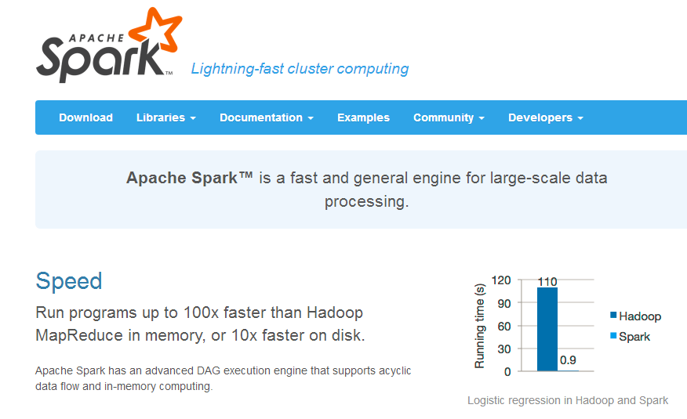
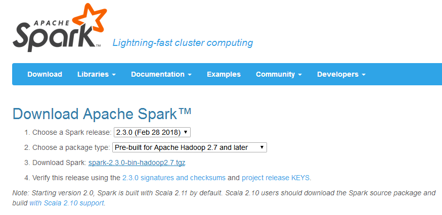
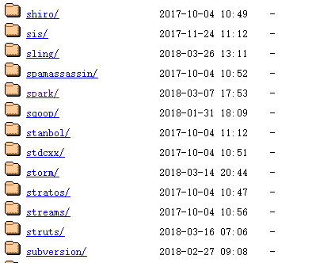
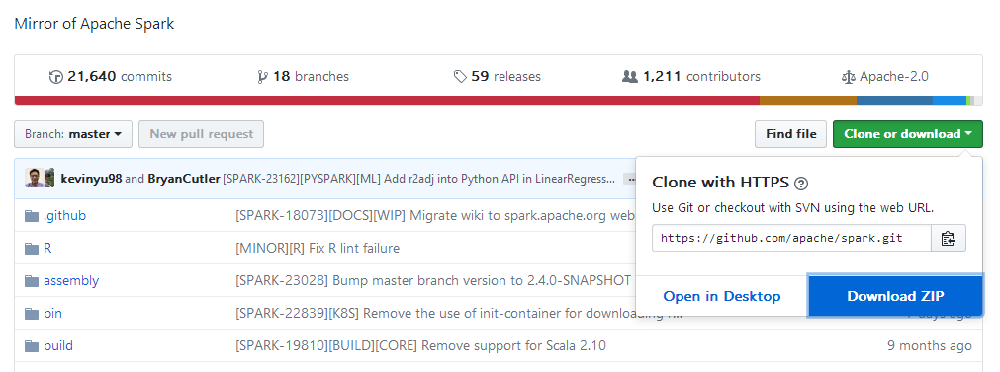
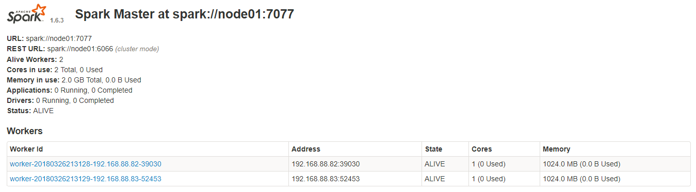
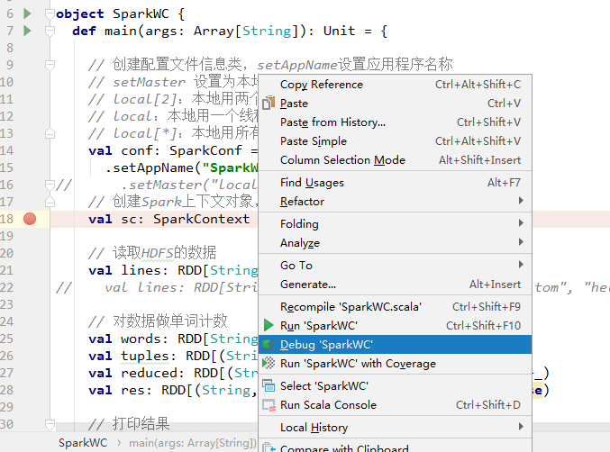
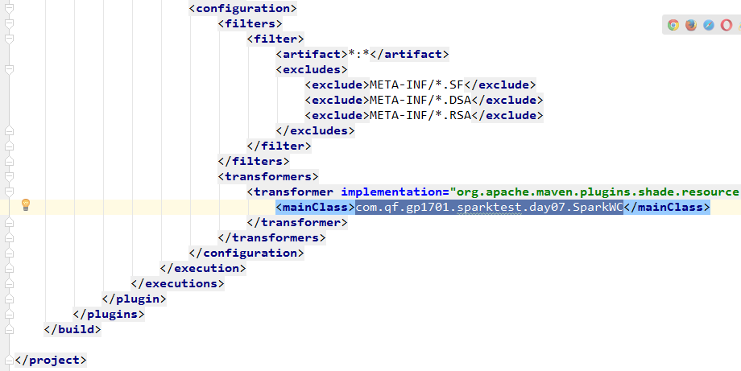
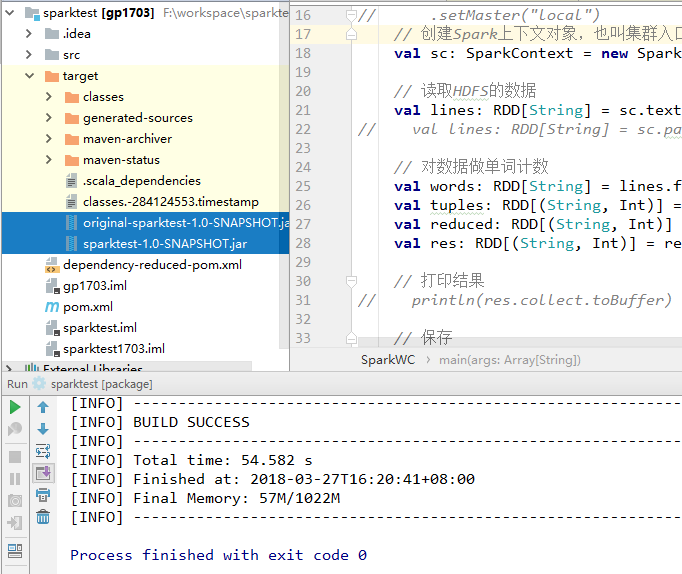
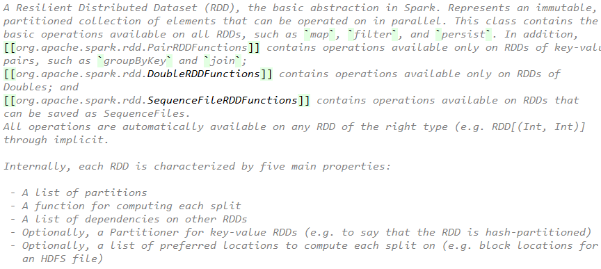

Spark集群配置和RDD基本概念
内容
1、大数据生态圈 2、Spark概述 3、Spark集群安装 4、Spark程序执行 5、RDD概述
目标
1、了解大数据生态圈各平台的应用场景 2、了解Spark分析引擎的特点 3、掌握Spark集群安装配置 4、掌握Spark提交任务 5、会使用Spark Shell进行Spark编程 6、能够用Scala和Java语言手写WordCount 7、掌握用IDEA打包并上传任务到集群 8、RDD的概念和常用算子练习
第一节 大数据生态圈

第二节 Spark概述
2.1、查看官网简介内容
依据文档介绍Spark分析引擎的一些特点：快、易用、通用、兼容性

第三节 Spark集群安装
3.1、服务器准备
准备两台以上Linux服务器，基本设置：同步时间、免密登录、关闭防火墙、安装JDK1.7以上
3.2、下载Spark
因为目前很多公司用的是2.0之前的版本，所以我们主要学习的版本是1.6.3。Spark2.3.0新版本的知识点也会涉及。下载安装包的途径有三个：
http://spark.apache.org/downloads.html

http://archive.apache.org/dist

https://github.com/apache/spark

3.3、解压、配置、启动
上传安装包并解压到指定目录
xxxxxxxxxxtar -zxvf spark-1.6.3-bin-hadoop2.6.tgz -C /usr/local进入到Spark安装目录
xxxxxxxxxxcd /usr/local/spark-1.6.3-bin-hadoop2.6进入conf目录，重命名并修改spark-env.sh.template文件
xcd conf/mv spark-env.sh.template spark-env.shvi spark-env.sh在该配置文件中添加如下配置
xxxxxxxxxxexportJAVA_HOME=/usr/java/jdk1.8.0_73export SPARK_MASTER_IP=node01export SPARK_MASTER_PORT=7077保存退出
新建slaves文件
xxxxxxxxxxvi slaves在该文件中添加子节点所在的位置（Worker节点）
node02 node03
保存退出
将配置好的Spark分发到其他节点上相同目录
xxxxxxxxxxscp -r spark-1.6.3-bin-hadoop2.6/ node02:$PWDscp -r spark-1.6.3-bin-hadoop2.6/ node03:$PWDSpark集群配置完毕，目前是1个Master，2个Work
在node01上启动Spark集群
xxxxxxxxxx/usr/local/spark-1.6.3-bin-hadoop2.6/sbin/start-all.sh启动后执行jps命令，会看到主节点上有Master进程，其他子节点上有Work进程
登录Spark管理界面查看集群状态（主节点）：http://node01:8080/

至此，Spark集群安装完成
3.4、Spark高可用（High Availability）环境配置
关于Spark集群的单点故障的解决，需要借助zookeeper，并且启动至少两个Master节点来实现高可用，配置如下：
Spark集群规划：node01，node02为Master；node03，node04，node05为Worker
安装配置zookeeper集群，并启动zookeeper集群
停止spark所有服务，修改配置文件spark-env.sh，在该配置文件中删掉SPARK_MASTER_IP并添加如下配置，
其中zk1,zk2,zk3为zk的hosts列表
xxxxxxxxxxexport SPARK_DAEMON_JAVA_OPTS="-Dspark.deploy.recoveryMode=ZOOKEEPER-Dspark.deploy.zookeeper.url=zk1,zk2,zk3-Dspark.deploy.zookeeper.dir=/spark"1.在node01节点上修改slaves配置文件内容指定worker节点
2.在node01上执行sbin/start-all.sh脚本，然后在node02上执行sbin/start-master.sh启动第二个Master
第四节 Spark程序执行
4.1、提交任务到集群
提交Spark提供的利用蒙特·卡罗算法求π的例子，其中100这个参数是计算因子
xxxxxxxxxx/usr/local/spark-1.6.3-bin-hadoop2.6/bin/spark-submit \--class org.apache.spark.examples.SparkPi \--master spark://node01:7077 \--executor-memory 1G \--total-executor-cores 2 \/usr/local/spark-1.6.3-bin-hadoop2.6/lib/spark-examples-1.6.3-hadoop2.6.0.jar\1004.2、Spark Shell
spark-shell是Spark自带的交互式Shell程序，方便用户进行交互式编程，用户可以在该命令行下用Scala编写Spark程序。spark-shell程序一般用作Spark程序测试练习来用。spark-shell属于Spark的特殊应用程序，我们可以在这个特殊的应用程序中提交应用程序。
spark-shell启动有两种模式，local模式和cluster模式，分别为：
xxxxxxxxxx# local模式 # local模式仅在本机启动一个SparkSubmit进程，没有与集群建立联系。/usr/local/spark-1.6.3-bin-hadoop2.6/bin/spark-shell xxxxxxxxxx# cluster模式/usr/local/spark-1.6.3-bin-hadoop2.6/bin/spark-shell \--master spark://node01:7077 \--executor-memory 1g \--total-executor-cores 2参数说明： --master spark://node01:7077 指定Spark集群的Master的地址 --executor-memory 1g 指定每个worker可用内存为1G --total-executor-cores 2 指定整个集群使用的cup核数为2个 注：spark-shell中已经默认将SparkContext和SQLContext对象初始化为sc和sqlContext。如果需要用到，则直接应用sc和sqlContext即可
4.3、在spark shell中编写WordCount程序
1.首先启动hdfs
2.向hdfs上传一个文件到hdfs://node01:9000/words.txt
文件内容为：
hello scala hello java hello scala
3.在spark shell中用Scala语言编写spark程序
xxxxxxxxxxsc.textFile("hdfs://node01:9000/words.txt").flatMap(_.split("")).map((_,1)).reduceByKey(_+_).saveAsTextFile("hdfs://node01:9000/out")4.使用hdfs命令查看结果
xxxxxxxxxxhdfs dfs -ls hdfs://node01:9000/out/p*说明：
sc是SparkContext对象，该对象是提交spark程序的入口
textFile(hdfs://node01:9000/words.txt)是hdfs中读取数据
flatMap(_.split(""))先map再压平
map((_,1))将单词和1构成元组
reduceByKey(_+_)按照key进行reduce，并将value累加
saveAsTextFile("hdfs://node01:9000/out")将结果写入到hdfs中4.4、在IDEA中用Scala实现WordCount
pom文件配置：
xxxxxxxxxx<properties> <maven.compiler.source>1.7</maven.compiler.source> <maven.compiler.target>1.7</maven.compiler.target> <encoding>UTF-8</encoding> <scala.version>2.10.6</scala.version> <spark.version>1.6.3</spark.version> <hadoop.version>2.6.4</hadoop.version> </properties> <dependencies> <dependency> <groupId>org.scala-lang</groupId> <artifactId>scala-library</artifactId> <version>${scala.version}</version> </dependency> <dependency> <groupId>org.apache.spark</groupId> <artifactId>spark-core_2.10</artifactId> <version>${spark.version}</version> </dependency> <dependency> <groupId>org.apache.hadoop</groupId> <artifactId>hadoop-client</artifactId> <version>${hadoop.version}</version> </dependency> </dependencies> <build> <sourceDirectory>src/main/scala</sourceDirectory> <testSourceDirectory>src/test/scala</testSourceDirectory> <plugins> <plugin> <groupId>net.alchim31.maven</groupId> <artifactId>scala-maven-plugin</artifactId> <version>3.2.2</version> <executions> <execution> <goals> <goal>compile</goal> <goal>testCompile</goal> </goals> <configuration> <args> <arg>-make:transitive</arg> <arg>-dependencyfile</arg> <arg>${project.build.directory}/.scala_dependencies</arg> </args> </configuration> </execution> </executions> </plugin> <plugin> <groupId>org.apache.maven.plugins</groupId> <artifactId>maven-shade-plugin</artifactId> <version>2.4.3</version> <executions> <execution> <phase>package</phase> <goals> <goal>shade</goal> </goals> <configuration> <filters> <filter> <artifact>*:*</artifact> <excludes> <exclude>META-INF/*.SF</exclude> <exclude>META-INF/*.DSA</exclude> <exclude>META-INF/*.RSA</exclude> </excludes> </filter> </filters> <transformers> <transformer implementation="org.apache.maven.plugins.shade.resource.ManifestResourceTransformer"> <mainClass>com.qf.spark.WordCount</mainClass> </transformer> </transformers> </configuration> </execution> </executions> </plugin> </plugins> </build> xxxxxxxxxximport org.apache.spark.rdd.RDDimport org.apache.spark.{SparkConf, SparkContext}object SparkWC { def main(args: Array[String]): Unit = { // 创建配置文件信息类，setAppName设置应用程序名称 // setMaster 设置为本地测试模式 // local[2]：本地用两个线程模拟集群运行任务 // local：本地用一个线程模拟集群运行任务 // local[*]：本地用所有空闲的线程模拟集群运行任务 val conf: SparkConf = new SparkConf() .setAppName("SparkWC") .setMaster("local") // 创建Spark上下文对象，也叫集群入口类 val sc: SparkContext = new SparkContext(conf) // 读取HDFS的数据 val lines: RDD[String] = sc.textFile(args(0)) // val lines: RDD[String] = sc.parallelize(Array("hello tom", "hello jerry hello jerry", "hello hello")) // 对数据做单词计数 val words: RDD[String] = lines.flatMap(_.split(" ")) val tuples: RDD[(String, Int)] = words.map((_, 1)) val reduced: RDD[(String, Int)] = tuples.reduceByKey(_+_) val res: RDD[(String, Int)] = reduced.sortBy(_._2, false) // 打印结果 // println(res.collect.toBuffer) // 保存 res.saveAsTextFile(args(1)) sc.stop() }}4.5、在IDEA中用Java实现WordCount
xxxxxxxxxximport org.apache.spark.SparkConf;import org.apache.spark.api.java.JavaPairRDD;import org.apache.spark.api.java.JavaRDD;import org.apache.spark.api.java.JavaSparkContext;import org.apache.spark.api.java.function.FlatMapFunction;import org.apache.spark.api.java.function.Function2;import org.apache.spark.api.java.function.PairFunction;import scala.Tuple2;import java.util.Arrays;public class JavaWC { public static void main(String[] args) { // 配置信息类 final SparkConf conf = new SparkConf() .setAppName("JavaWc"); //.setMaster("local[2]"); // 上下文对象 final JavaSparkContext jsc = new JavaSparkContext(conf); // 获取数据 final JavaRDD<String> lines = jsc.textFile(args[0]); // 切分 final JavaRDD<String> words = lines.flatMap(new FlatMapFunction<String, String>() { public Iterable<String> call(String s) throws Exception { return Arrays.asList(s.split(" ")); } }); // 把每个单词生成一个个元组 final JavaPairRDD<String, Integer> pairRDD = words.mapToPair( new PairFunction<String, String, Integer>() { public Tuple2<String, Integer> call(String s) throws Exception { return new Tuple2<String, Integer>(s, 1); } }); // 聚合 final JavaPairRDD<String, Integer> reduced = pairRDD.reduceByKey(new Function2<Integer, Integer, Integer>() { public Integer call(Integer v1, Integer v2) throws Exception { return v1 + v2; } }); // Java并没有提供sortBy算子，如果需要一value来进行排序时，此时需要把数据反转一下， // 排序完成后，再反转回来 final JavaPairRDD<Integer, String> swaped = reduced.mapToPair(new PairFunction<Tuple2<String, Integer>, Integer, String>() { public Tuple2<Integer, String> call(Tuple2<String, Integer> tup) throws Exception { return tup.swap(); } }); // 排序 final JavaPairRDD<Integer, String> sorted = swaped.sortByKey(false); // 把数据再反转回来 final JavaPairRDD<String, Integer> res = sorted.mapToPair(new PairFunction<Tuple2<Integer, String>, String, Integer>() { public Tuple2<String, Integer> call(Tuple2<Integer, String> tup) throws Exception { return tup.swap(); } });// System.out.println(reduced.collect()); res.saveAsTextFile(args[1]); jsc.stop(); }}4.6、IDEA中代码调试
首先在要调试的应用程序的类中打上断点，在main方法中右键点选Debug 'SparkWC'选项，或Alt+Shift+F9

4.7、打包并上传到集群运行
使用Maven打包：首先修改pom.xml中的main class

点击IDEA右侧的Maven Projects选项，先双击clean清除以前生成的包，再双击package进行打包

选择编译成功的jar包，并将该jar上传到Spark集群中的某个节点上，会生成两个jar包，一个是不带引用的包，一个是带引用的包

启动hdfs和Spark集群
xxxxxxxxxx/usr/local/hadoop-2.6.4/sbin/start-dfs.sh/usr/local/spark-1.6.3-bin-hadoop2.6/sbin/start-all.sh使用spark-submit命令提交Spark应用（注意参数的顺序）
xxxxxxxxxx/usr/local/spark-1.6.3-bin-hadoop2.6/bin/spark-submit\--class com.qf.spark.WordCount \--master spark://node01:7077 \--executor-memory 1G \--total-executor-cores 2 \/root/spark-mvn-1.0-SNAPSHOT.jar \hdfs://node01:9000/wc \hdfs://node01:9000/out查看程序执行结果
xxxxxxxxxxhdfs dfs -cat hdfs://node01:9000/out/part-00000第五节 RDD概述
5.1、RDD的概念
RDD（Resilient Distributed Dataset）是一个分布式数据集，是Spark中最基本的数据抽象，它代表一个不可变、可分区、里面的元素可并行计算的集合。RDD具有数据流模型的特点：自动容错、位置感知性调度和可伸缩性。RDD允许用户在执行多个查询时显式地将工作集缓存在内存中，后续的查询能够重用工作集，这极大地提升了查询速度。
5.2、RDD的属性
1）一组分片（Partition），即数据集的基本组成单位。对于RDD来说，每个分片都会被一个计算任务处理，并决定并行计算的粒度。用户可以在创建RDD时指定RDD的分片个数，如果没有指定，那么就会采用默认值。默认值就是程序所分配到的CPUCore的数目。 2）一个计算每个分区的函数。Spark中RDD的计算是以分片为单位的，每个RDD都会实现compute函数以达到这个目的。compute函数会对迭代器进行复合，不需要保存每次计算的结果。 3）RDD之间的依赖关系。RDD的每次转换都会生成一个新的RDD，所以RDD之间就会形成类似于流水线一样的前后依赖关系。在部分分区数据丢失时，Spark可以通过这个依赖关系重新计算丢失的分区数据，而不是对RDD的所有分区进行重新计算。 4）一个Partitioner，即RDD的分片函数。当前Spark中实现了两种类型的分片函数，一个是基于哈希的HashPartitioner，另外一个是基于范围的RangePartitioner。只有对于key-value的RDD，才会有Partitioner，非key-value的RDD的Parititioner的值是None。Partitioner函数不但决定了RDD本身的分片数量，也决定了parent RDD Shuffle输出时的分片数量。 5）一个列表，存储存取每个Partition的优先位置（preferred location）。对于一个HDFS文件来说，这个列表保存的就是每个Partition所在的块的位置。按照“移动数据不如移动计算”的理念，Spark在进行任务调度的时候，会尽可能地将计算任务分配到其所要处理数据块的存储位置。

5.3、创建RDD的两种方式
1）由一个Scala集合或数组以并行化的方式创建。
xxxxxxxxxxval rdd1 =sc.parallelize(Array(1,2,3,4,5,6,7,8))2）由外部存储系统的数据集创建，包括本地的文件系统，还有所有Hadoop支持的数据集，比如HDFS、Cassandra、HBase等。
val rdd1 =sc.textFile("hdfs://node01/words.txt")5.4、RDD编程API
RDD的算子分两种类型：Transformation和Action
Transformation：
1）RDD中的所有转换都是延迟加载的，具有懒惰的属性。也就是说，它们并不会直接计算结果。相反的，它们只是记住这些应用到基础数据集（例如一个文件）上的转换动作。只有当发生一个要求返回结果给Driver的动作时，这些转换才会真正运行。这种设计让Spark更加有效率地运行。
常用的Transformation算子：
| 转换 | 含义 |
|---|---|
| map(func) | 返回一个新的RDD，该RDD由每一个输入元素经过func函数转换后组成 |
| filter(func) | 返回一个新的RDD，该RDD由经过func函数计算后返回值为true的输入元素组成 |
| flatMap(func) | 类似于map，但是每一个输入元素可以被映射为0或多个输出元素（所以func应该返回一个序列，而不是单一元素） |
| mapPartitions(func) | 类似于map，但独立地在RDD的每一个分片上运行，因此在类型为T的RDD上运行时，func的函数类型必须是Iterator[T] => Iterator[U] |
| mapPartitionsWithIndex(func) | 类似于mapPartitions，但func带有一个整数参数表示分片的索引值，因此在类型为T的RDD上运行时，func的函数类型必须是 (Int, Iterator[T]) => Iterator[U] |
| sample(withReplacement, fraction, seed) | 根据fraction指定的比例对数据进行采样，可以选择是否使用随机数进行替换，seed用于指定随机数生成器种子 |
| union(otherDataset) | 对源RDD和参数RDD求并集后返回一个新的RDD |
| intersection(otherDataset) | 对源RDD和参数RDD求交集后返回一个新的RDD |
| distinct([numTasks])) | 对源RDD进行去重后返回一个新的RDD |
| groupByKey([numTasks]) | 在一个(K,V)的RDD上调用，返回一个(K, Iterator[V])的RDD |
| reduceByKey(func, [numTasks]) | 在一个(K,V)的RDD上调用，返回一个(K,V)的RDD，使用指定的reduce函数，将相同key的值聚合到一起，与groupByKey类似，reduce任务的个数可以通过第二个可选的参数来设置 |
| aggregateByKey(zeroValue)(seqOp, combOp, [numTasks]) | |
| sortByKey([ascending], [numTasks]) | 在一个(K,V)的RDD上调用，K必须实现Ordered接口，返回一个按照key进行排序的(K,V)的RDD |
| sortBy(func,[ascending], [numTasks]) | 与sortByKey类似，但是更灵活 |
| join(otherDataset, [numTasks]) | 在类型为(K,V)和(K,W)的RDD上调用，返回一个相同key对应的所有元素对在一起的(K,(V,W))的RDD |
| cogroup(otherDataset, [numTasks]) | 在类型为(K,V)和(K,W)的RDD上调用，返回一个(K,(Iterable |
| cartesian(otherDataset) | 笛卡尔积 |
| pipe(command, [envVars]) | |
| coalesce(numPartitions) | 重新分区 |
| repartition(numPartitions) | 重新分区 |
| repartitionAndSortWithinPartitions(partitioner) |
Action
2）触发Spark作业的运行，真正触发转换算子的计算
常用的Action算子：
| 动作 | 含义 |
|---|---|
| reduce(func) | 通过func函数聚集RDD中的所有元素，这个功能必须是可交换且可并联的 |
| collect() | 在驱动程序中，以数组的形式返回数据集的所有元素 |
| count() | 返回RDD的元素个数 |
| first() | 返回RDD的第一个元素（类似于take(1)） |
| take(n) | 返回一个由数据集的前n个元素组成的数组 |
| takeSample(withReplacement,num, [seed]) | 返回一个数组，该数组由从数据集中随机采样的num个元素组成，可以选择是否用随机数替换不足的部分，seed用于指定随机数生成器种子 |
| takeOrdered(n, [ordering]) | takeOrdered和top类似，只不过以和top相反的顺序返回元素 |
| saveAsTextFile(path) | 将数据集的元素以textfile的形式保存到HDFS文件系统或者其他支持的文件系统，对于每个元素，Spark将会调用toString方法，将它装换为文件中的文本 |
| saveAsSequenceFile(path) | 将数据集中的元素以Hadoop sequencefile的格式保存到指定的目录下，可以使HDFS或者其他Hadoop支持的文件系统。 |
| saveAsObjectFile(path) | |
| countByKey() | 针对(K,V)类型的RDD，返回一个(K,Int)的map，表示每一个key对应的元素个数。 |
| foreach(func) | 在数据集的每一个元素上，运行函数func进行更新。 |
5.5、RDD常用算子练习
http://homepage.cs.latrobe.edu.au/zhe/ZhenHeSparkRDDAPIExamples.html
总结
作业
1、搭建Spark集群 2、启动Spark Shell练习常用算子
面试题
1、描述什么是RDD